NoiseBox predicts the sound level of a point source at every cell of a grid, the way ISO 9613-2 describes it, and puts the result on your map. You describe a scenario: a source with its sound power spectrum, the terrain, a receiver area and, if you like, buildings, noise barriers and an enclosure around the source. NoiseBox checks the scenario, calculates it in your own validated MATLAB code and adds a named group of rasters to Contents. Change one thing (a taller barrier) and run again to compare.
Every input is checked. A problem is a numbered message that says what is wrong, why it matters and what to do; clicking it jumps to the input. There are 260 such messages (Appendix A).
The ribbon and pane write a scenario file. Pro's Python reads it and sends the numeric job to a small worker in Python 3.10 that owns MATLAB. MATLAB runs the files in matlab\core. No acoustics are calculated anywhere else, so editing a .m file changes the next run.
| Item | Version | Notes |
|---|---|---|
| ArcGIS Pro | 3.5 or later | Tested with 3.5.3. |
| MATLAB | R2022b to R2024b | Licensed on that computer; no toolboxes are used. Tested with R2023a. |
| Python 3.10 (64-bit) | 3.10.x | From python.org. Needed only because MATLAB's Python engine does not run in Pro's Python 3.11. Used in its own environment. |
| The NoiseBox folder | Copy it anywhere (a folder that OneDrive or Dropbox syncs is best avoided). | |
| A DTM raster (optional) | any single-band elevation raster | Or the ground surface of your map. Without a DTM the ground is flat at 0 m. |
| Only to rebuild the add-in: .NET SDK | 8 or newer | Not needed to use it. |
.\setup\setup_noisebox.ps1 (add -MatlabRoot "D:\MATLAB\R2023a" if MATLAB is not in C:\Program Files\MATLAB). It creates %LOCALAPPDATA%\NoiseBox\venv310, installs numpy and the MATLAB Engine into it, and tells the add-in where the folder is.dist\NoiseBox.esriAddinX and choose Install. Without a dialog: "C:\Program Files\ArcGIS\Pro\bin\RegisterAddIn.exe" dist\NoiseBox.esriAddinX /s. Do not copy files into the add-in folders by hand: Pro keeps its own copy.NoiseBox.pyt and run 4. Utilities > Check MATLAB Link. It starts MATLAB once, runs a smoke case (expect 45.22 dB(A)) and shows that the .m files it ran are the ones in matlab\core..\setup\build_addin.ps1, then raise the version in addin\NoiseBoxAddin\Config.daml before installing: Pro keeps the old copy of an add-in whose version number did not change.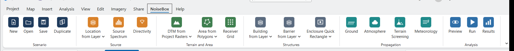
| Group | Button | What it does |
|---|---|---|
| Scenario | New / Open / Save / Duplicate | A scenario is one .nbscenario.json file. Duplicate copies it to test a mitigation next to the baseline. The GIS data it refers to is never changed. |
| Source | Location (menu) | Three equivalent ways to set the source position: from a layer, enter coordinates, place on the map. |
| Source | Source Spectrum | Opens the pane at the Lw table: type, paste, import CSV, load a named profile. |
| Source | Directivity | Omnidirectional, or a constant correction Dc per band. |
| Terrain and Area | DTM (menu) | Project raster, map ground surface, browse for a file, show coverage, or flat ground. |
| Terrain and Area | Area (menu) | Existing polygons, draw a polygon or rectangle, radius around the source, capture the map extent. |
| Terrain and Area | Receiver Grid | Cell size (match the DTM or custom) and receiver height above local ground. |
| Structures | Building (menu) | From a polygon layer or draw a footprint. |
| Structures | Barrier (menu) | From a line layer, sketch on the map, or precise placement (start point, length, azimuth, height). |
| Structures | Enclosure (menu) | A quick rectangle around the source, or draw a footprint. |
| Propagation | Ground, Atmosphere, Terrain Screening, Meteorology | Open the pane at those settings (section 5.4). |
| Analysis | Preview | Fast check with no acoustic calculation: shows what the run will use and lists every issue. |
| Analysis | Run | Calculates with the MATLAB core and adds a named group to Contents. |
| Analysis | Results | Shows the datasets and run snapshots written so far. |
Buttons with a small arrow open a menu; the first item is also the button itself. Every item sets or adds something in the scenario and opens the pane at the right place.
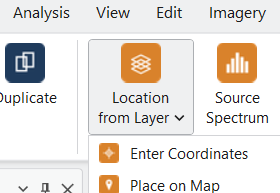
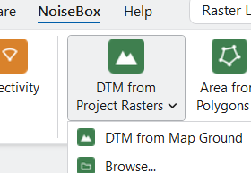
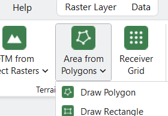
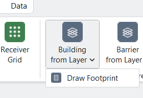
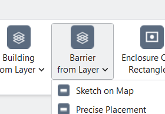
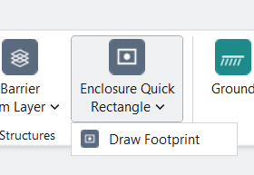
One dockable pane holds everything. Each section can be collapsed; a collapsed section shows a real summary of what is set in it. Preview and Run stay at the bottom with the number of errors and warnings and a status line.
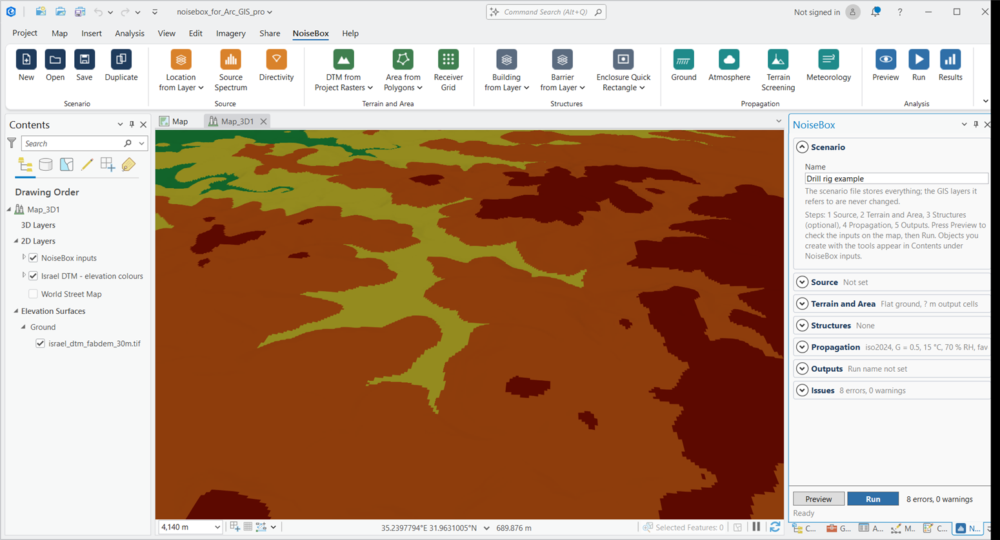
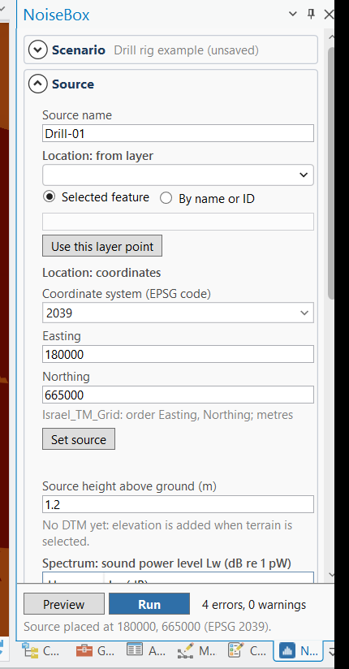
| Setting | Meaning |
|---|---|
| Source name | Label used in messages and in the NoiseBox source layer. |
| Location: from layer | The selected point of a point layer, or one found by name or ID (SRC-xxx messages explain a missing selection or several matches). |
| Location: coordinates | A coordinate pair in a system you choose (EPSG code). The labels say which order to type (Easting, Northing, or Latitude, Longitude). One conversion to the analysis system is done, once; all three location methods give the same point (tested to 2e-10 m). |
| Source height above ground (m) | The physical height of the source. It is not the ground elevation: the pane shows “Ground 21.00 m + height 1.20 m = 22.20 m absolute” once a DTM is chosen. |
| Spectrum Lw (dB re 1 pW) | Eight octave bands, 63 to 8000 Hz. An empty cell is missing, not 0 dB; a missing band stops the run and is named. Paste (8 numbers or frequency + level) from Excel or MATLAB, import a CSV, or load/save a named profile. The bar chart under the table shows the spectrum. |
| Directivity | Omnidirectional, or a constant correction Dc (dB, positive = louder) per band applied in all directions. A heading is stored; an angular table is not supported yet (a message says so). |
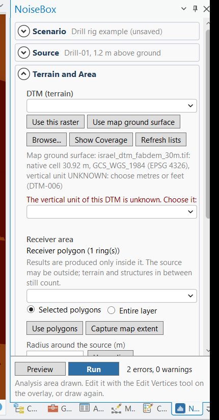
| Setting | Meaning |
|---|---|
| DTM (terrain) | Elevations in a raster. Use this raster: a raster of the map. Use map ground surface: the raster that is the ground elevation source of the active map (Contents > Elevation Surfaces > Ground). It must be a raster file; if the ground is a web elevation service the pane says so and tells you what to do. Browse: any raster file. Flat ground: elevation 0 m, terrain ignored. |
| Vertical unit | If the raster does not say whether its heights are metres or feet, you are asked (DTM-006). |
| Show Coverage | Draws the DTM footprint and the gaps along source-to-receiver paths (red squares) on the map. |
| Receiver area | Results exist only inside it; the source may be outside. Four ways: existing polygons (selected or the entire layer), a drawn polygon or rectangle, a radius around the source (follows the source), the captured map extent (fixed). |
| Receiver grid | Match the DTM resolution, or a custom cell size in metres. The pane shows the number of cells; a coarse DTM under a fine grid is flagged. |
| Receiver height | Metres above the local terrain at every cell, not above sea level. |
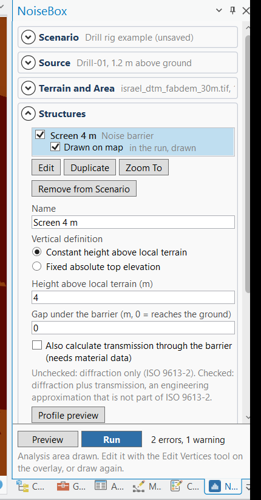
| Setting | Meaning |
|---|---|
| List entries | Left tick = Include in Analysis (the engine uses it). “Drawn on map” = shown in Contents and on the map. The two are independent: hiding an object never changes the calculation, and an excluded object can stay drawn. |
| Building | A footprint with a height above ground. Effect in this version: screening (diffraction over the top and around the sides); no reflections. Receiver cells inside the footprint are left empty. |
| Noise barrier | A line. Vertical definition: constant height above local terrain, or a fixed absolute top elevation. Gap under the barrier. A profile preview plots the terrain and the barrier top along the line. Transmission is off by default (diffraction only, as in ISO 9613-2); switching it on adds transmission through the barrier from material data and is an engineering approximation. |
| Edit, Duplicate, Zoom To, Remove | Remove only takes it out of the scenario; the GIS feature is not touched. |
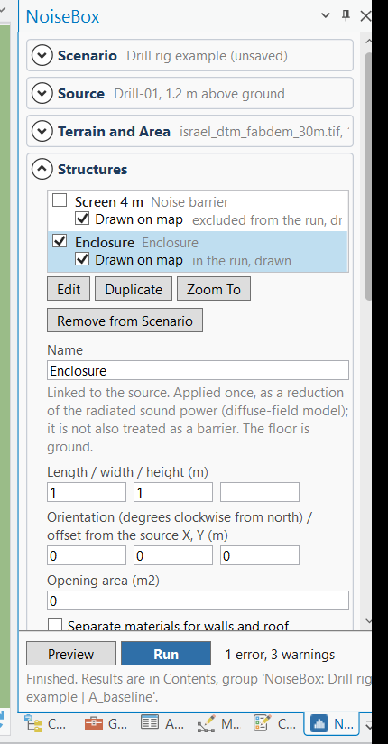
Applied once, as a reduction of the radiated sound power (diffuse-field model in your nb_enclosure.m); it is not also treated as a barrier, and the floor counts as ground. A rectangle is defined by length, width and height, orientation (degrees clockwise from north) and an offset from the source; a drawn footprint works too.
Opening area (m²) matters: with no opening the model predicts an unrealistically large reduction (about 50 dB for 25 kg/m²). A real enclosure has doors, vents and leaks; a message (ENC-021) states the reduction limit that the opening gives. Treat enclosure results as an upper-end estimate.
Separate materials for walls and roof: each face gets its own material; the enclosure is combined by area.
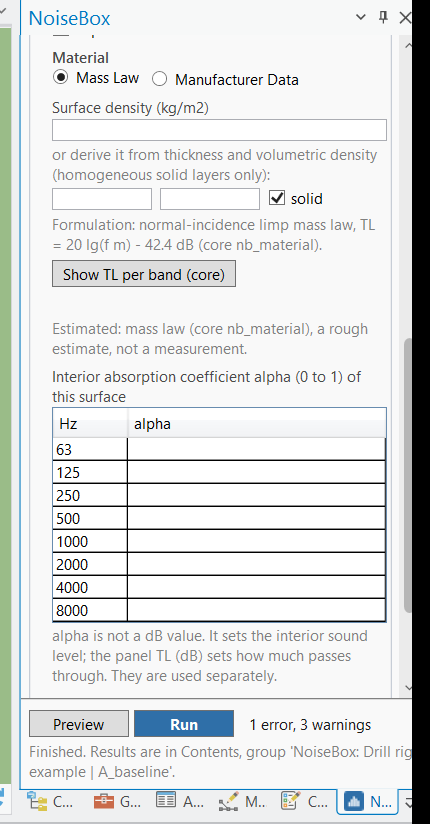
nb_material). “Show TL per band” asks the core and shows the numbers.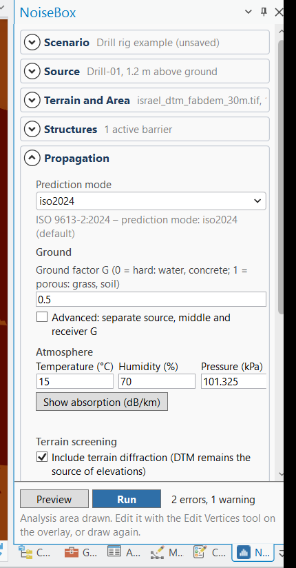
| Setting | Meaning |
|---|---|
| Prediction mode | Shows the ISO edition used: ISO 9613-2:2024 (default), the draft amendment (not a published edition) or ISO 9613-2:1996 (superseded). |
| Ground factor G | 0 = hard (water, concrete), 1 = porous (grass, soil), default 0.5. Advanced: separate G for the source, middle and receiver regions. |
| Atmosphere | Temperature (°C), relative humidity (%), pressure (kPa). “Show absorption” asks the core for the absorption coefficient per band (dB/km) so you can see them. |
| Terrain screening | With a DTM the engine always includes terrain diffraction in this version; switching it off is reported as an error (DTM-016) instead of being ignored. |
| Meteorology | Favourable propagation (no correction, the default) or long-term average with Cmet from C0 (dB, practical range 0 to about 5). |
| Active effects | A plain-language list of the attenuation terms in the current run, e.g. “screening by 1 building(s) and 1 barrier(s) (Abar)”. |
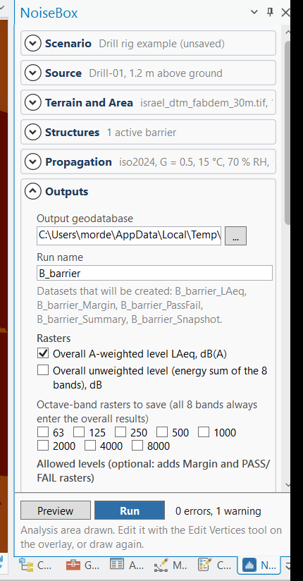
| Setting | Meaning |
|---|---|
| Output geodatabase | A file geodatabase (.gdb). Doubled or forward slashes in the path are tolerated. |
| Run name | Prefixes every dataset; the pane lists the names that will be created. A name that exists is made unique (_2, _3). Each run saves a _Snapshot table with the whole scenario and the code that ran. |
| Rasters | Independent choices: overall A-weighted LAeq, overall unweighted level (energy sum of the 8 bands), and any octave-band rasters. All eight bands always enter the overall results. |
| Allowed levels | Section 6. |
| Shared colour scale | One minimum and maximum (dB) so baseline and mitigation runs have identical colours. |
| Detail cells | None, Levels only, or Full: one invisible polygon per cell; click it with Identify to read every band and every attenuation term (Adiv, Aatm, Agr, Abar). |
| Add results to the map | Creates a named group in Contents. Datasets are always written to the geodatabase. |
| MATLAB engine | Section 10. |
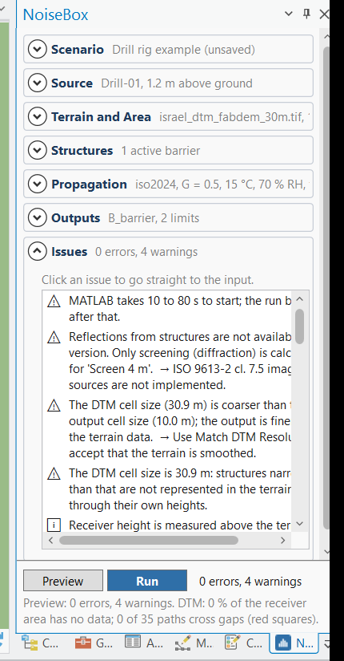
Errors stop the run. Warnings tell you about something that may not be what you meant (for example: reflections from structures are not calculated; the DTM cell is coarser than the output grid). Notes explain what will happen (which datasets will be created, how the pass rule works).
You can define the allowed level in any combination:
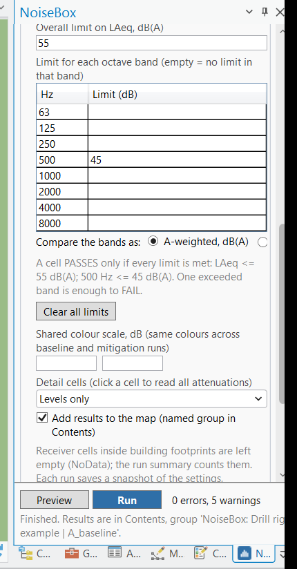
| Dataset | Content |
|---|---|
<run>_PassFail | 1 = PASS, 0 = FAIL, with a Status column in its attribute table. |
<run>_Margin | The largest exceedance over all limits in dB: positive means the cell fails by that much; the most negative values are the cells with the most room. |
| Detail cells | Status, Margin_dBA, Worst_Hz (the band that exceeds most), Worst_dB, and one Marg_<Hz> field per limited band. |
<run>_Summary | Each limit, the pass rule, the area failing in m² and %, and for each limited band the number of cells that exceed it. |
Tested: the cells that fail are exactly those where LAeq exceeds the overall limit or a band exceeds its limit; Marg_500 equals the band level minus its limit to 0.0 dB; weighting “unweighted” compares the unweighted band level (tests/test_limits.py, 20 checks).
Whatever you create with a tool or from a layer is a real object, not a temporary drawing. It is written to the feature classes of the file geodatabase NoiseBox_inputs.gdb (in your project folder) and appears in Contents in the group NoiseBox inputs, drawn on the map:
| Layer | Shape | Created by | Fields |
|---|---|---|---|
| NoiseBox source | point | Location menu (layer, coordinates, place on map) | Name, Height_m |
| NoiseBox noise barriers | line | Barrier menu, sketch or precise placement | Name, Height_m, Include, Note |
| NoiseBox buildings | polygon | Building menu | Name, Height_m, Include |
| NoiseBox enclosures | polygon | Enclosure menu | Name, Height_m, Include |
| NoiseBox receiver area | polygon | Area menu | Name, Note (mode) |
The scenario file stays the master: the layers are rebuilt from it after every change, so they never drift away from what the calculation will use. You can select, label, symbolise and zoom to them like any layer. An object whose Drawn on map box is unticked is not written to its layer (it is still calculated if Include is ticked). To change an object, edit it in the pane; to use your own features instead, use the “From Layer” items. The sync writes in the analysis coordinate system and orients polygons correctly; the log of problems is %LOCALAPPDATA%\NoiseBox\addin.log.
The question: a drill rig (Lw 92, 96, 98, 97, 94, 90, 85, 78 dB from 63 to 8000 Hz) works at the Israeli TM Grid position 180000 / 665000, 1.2 m above ground. The allowed level is 55 dB(A) overall and, in addition, 45 dB(A) in the 500 Hz band. A 4 m high screen 25 m east of the rig is proposed. How much does it help, and where is the limit still exceeded?
The steps below were run in ArcGIS Pro; every picture is a screenshot of that run. The terrain is the ground surface of the map (SRTM-based FABDEM, 30 m).
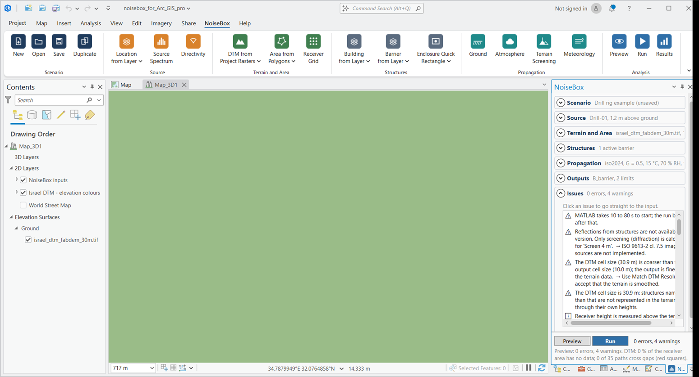
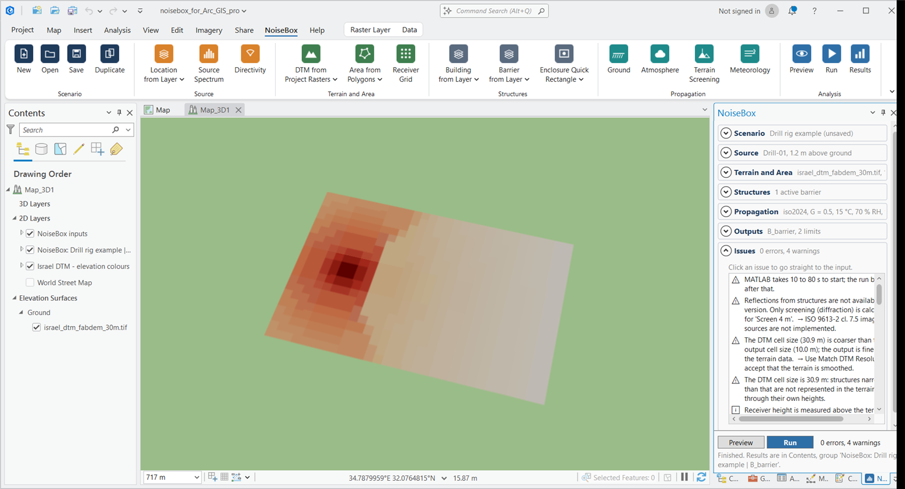
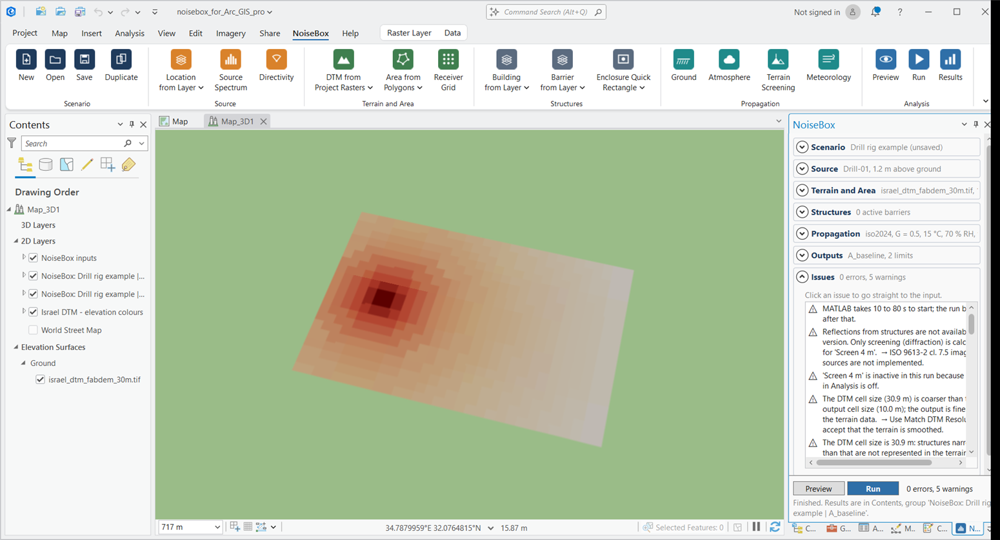
_Summary tables):| A: no barrier | B: 4 m barrier | |
|---|---|---|
| LAeq minimum / mean / maximum, dB(A) | 38.4 / 46.8 / 71.8 | 32.7 / 41.8 / 71.8 |
| Cells above 55 dB(A) | 8.7 % | 8.0 % |
| Area failing at least one limit (overall 55 dB(A) or 500 Hz 45 dB(A)) | 16.0 % | 13.3 % |
| Cells exceeding the 500 Hz limit | 96 | 80 |
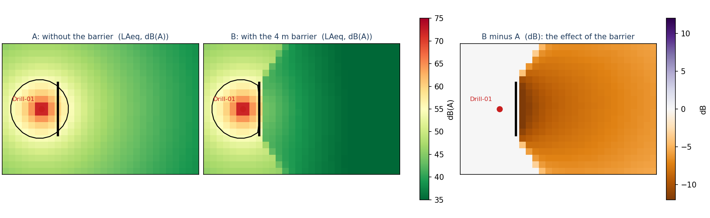
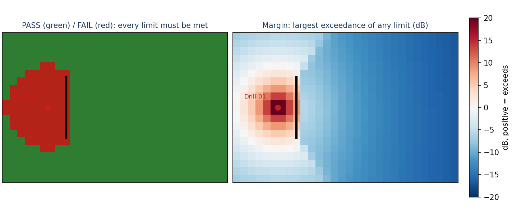
Status, Worst_Hz and Marg_500._Snapshot table, so any result can be reproduced later.| Dataset (prefix = run name) | Content |
|---|---|
| _LAeq | Overall A-weighted level, dB(A), one value per receiver cell (NoData outside the area, inside buildings, at the source, outside the DTM). |
| _LZ | Overall unweighted level (energy sum of the 8 bands), if chosen. |
| _Lp<Hz> | Octave-band level, dB, for the bands you chose. |
| _Margin, _PassFail | Section 6. Created whenever any limit is defined. |
| _Cells | Detail polygons (Identify). Fields include LAeq, Status, Lp_/LpA_ per band, DomSrc, Dist_m, Ground_m, PathType, Adiv_/Aatm_/Agr_/Abar_ per band. |
| _Summary | Cells, cell size, receiver height, LAeq min/max, the active effects, every limit and the share of area failing. |
| _Snapshot | The scenario, what was resolved (coordinate system, grid), and which code ran (MATLAB version, md5 of every .m file). Re-running a snapshot reproduces the raster. |
Starting MATLAB takes about 7 s here and 10 to 80 s on other computers. NoiseBox therefore keeps one MATLAB ready after the first run (mode warm, the default): later runs skip the start-up (in the test: 4.5 s against 12.2 s for a fresh MATLAB on a 60-cell case). Before every run the md5 of every .m file is compared with the previous run; if one changed, MATLAB's function cache is cleared, so an edited .m file still takes effect on the next run. The engine quits after 30 idle minutes. Outputs > MATLAB engine shows its state and has a Stop engine button that frees the memory (about 0.5 GB).
To go back to one MATLAB per run, put {"engine": "fresh"} in config.json; docs\ENGINE_OPTIONS.md records the options that were considered (including why compiling the core to Python was not possible with the licence available here) so you can decide later. The warm and the fresh mode give identical rasters (difference 0.0 dB).
There are 260 numbered messages (Appendix A): errors stop the run, warnings allow it but tell you about something that may not be what you intended, notes explain. Each is built from a template that fills in your values, and has a section so a click takes you to the input. Typical examples:
| Code | Message |
|---|---|
| SRC-001 | No source has been placed. → Use Source > Set Location: From Layer, Enter Coordinates or Place on Map. |
| SPC-002 | Sound power Lw is missing in 1 band(s): 125 Hz. A missing value is not the same as 0 dB. → Enter it or load a profile. |
| DTM-006 | The vertical unit of the DTM is unknown. → Choose metres or feet for the DTM. |
| OUT-021 | The limit for 500 Hz is not a number (got x). → Enter the allowed level in dB, or leave the box empty for no limit in that band. |
| OUT-023 | (note) A cell passes only if EVERY limit is met: LAeq <= 55 dB(A); 500 Hz <= 45 dB(A). → One exceeded band is enough to fail; the Margin raster shows the largest exceedance in dB. |
| ENC-021 | (warning) Enclosure 'Enclosure': openings of 0.50 m2 limit the achievable reduction to 22.0 dB. → Close or attenuate the openings (silencers) to get more reduction. |
| Included | Not included (and what NoiseBox does about it) |
|---|---|
| Geometric divergence, atmospheric absorption, ground effect (Agr), screening by barriers, buildings and terrain (Abar), an optional Cmet; energy sums over bands and sources; A-weighting; enclosure reduction applied once to the radiated Lw. | Reflections from structures (warning). Angle-dependent directivity (the heading is stored, a message says it is unused). Terrain screening off while keeping a DTM (error DTM-016). Receivers inside a building footprint are left empty. The enclosure model is idealised and needs an opening area. |
matlab/core code; NoiseBox prepares the data, runs it, and writes the results.| Test | Result |
|---|---|
| Scenario validation, geometry, spectrum input, source methods (260-entry catalogue) | PASS: 151 checks passed, 0 failed, exit code 0 (0 s) |
| Command line used by the add-in (JSON, DTM coverage) | PASS: 14 checks passed, 0 failed, exit code 0 (0 s) |
| Add-in package: DAML vs Esri schema, classNames, refIDs, zip layout | PASS: 10 checks passed, 0 failed, exit code 0 (0 s) |
| Add-in pane: XAML bindings, handlers, converters, focus targets | PASS: 5 checks passed, 0 failed, exit code 0 (0 s) |
| Original toolbox vs the MATLAB core (raster, bands, every detail field) | PASS: 1 checks passed, 0 failed, exit code 0 (0 s) |
| Original toolbox: hot reload, 2 sources, drawn inputs, polygon area, DEM, receivers, compare | PASS: 10 checks passed, 0 failed, exit code 0 (0 s) |
| Scenario runs on the MATLAB core: baseline, barrier, enclosure, Dc, C0, G, outputs, previews, snapshot | PASS: 25 checks passed, 0 failed, exit code 0 (0 s) |
| MATLAB engine modes: warm engine == fresh MATLAB, hot reload of an edited .m, faster from the 2nd run | PASS: 12 checks passed, 0 failed, exit code 0 (0 s) |
| Allowed levels: overall dB(A) and per-band limits, one exceeded limit = FAIL | PASS: 20 checks passed, 0 failed, exit code 0 (0 s) |
| All toolbox tools through ArcPy's geoprocessing framework (incl. Run Scenario) | PASS: 1 checks passed, 0 failed, exit code 0 (0 s) |
.esriAddinX, the tab and all its buttons, the pane, the menus, opening a scenario, typing values, Preview, Run through MATLAB, results in Contents, a baseline run with the barrier excluded, the real objects in NoiseBox inputs, the DTM from the map's ground surface, the per-band limits.| Symptom | Cause and what to do |
|---|---|
| No NoiseBox tab | Project > Add-In Manager shows load errors. Install again (section 3). Pro must be closed while installing. |
| A ribbon button turns grey after a click | Its handler threw an exception. Read %LOCALAPPDATA%\NoiseBox\addin.log (every exception inside the add-in is written there) and report it. |
| I rebuilt the add-in but Pro shows the old one | Raise version in Config.daml. If a Pro process that crashed earlier is still listed in Task Manager it keeps the cached DLL open; rename %LOCALAPPDATA%\ESRI\ArcGISPro\AssemblyCache\{6B0C3A2E-4D52-4E0B-9B52-0F7B8C1E5A11}\NoiseBoxAddin.dll and install again, or restart the computer. |
| “Failed to add data” for the results | The geodatabase path was malformed (doubled backslashes). NoiseBox now normalises it, and if Pro still refuses inside the tool the add-in adds the result layers itself. |
| The run is slow to start | The first run starts MATLAB; later runs reuse it (section 10). |
| The MATLAB link check fails | Run setup\setup_noisebox.ps1 again; check that MATLAB is licensed for this user; see %LOCALAPPDATA%\NoiseBox\engine.log. |
| Pro asks to recover the project | It happens after Pro was closed by force. Answer No if you have no unsaved work. |
| Code | Type | Message | What to do |
|---|---|---|---|
| SCN-001 | error | The scenario file does not exist: {path} | Open a scenario from the list, or create a new one. |
| SCN-002 | error | The scenario file is not valid JSON ({detail}). | Restore the file from a backup or create a new scenario; do not edit the file by hand. |
| SCN-003 | error | The scenario was written by an unsupported schema version ({found}; this version reads {expected}). | Open it with the add-in version that saved it, or re-create the scenario. |
| SCN-004 | error | The scenario has no name. | Give the scenario a name in the Scenario group; it is used for the run name and the saved file. |
| SCN-005 | warning | The scenario file contains unknown entries ({keys}); they are kept but ignored. | Update the add-in if the file came from a newer version. |
| SCN-006 | error | The scenario has no coordinate system for the analysis (crs.wkid is empty). | Pick a projected coordinate system in metres, e.g. Israeli TM Grid (2039) or the UTM zone of the site. |
| SCN-007 | error | The analysis coordinate system {wkid} is geographic (degrees). Distances cannot be computed in degrees. | Choose a projected, metre-based coordinate system for the analysis, e.g. {suggest}. |
| SCN-008 | error | The analysis coordinate system {wkid} uses {unit} ({mpu:.6g} m per unit). NoiseBox needs metres. | Choose a coordinate system whose linear unit is the metre. |
| SCN-009 | error | The coordinate system code {wkid} is not recognised. | Enter a valid EPSG/WKID code such as 2039 or 32636. |
| SCN-010 | info | Scenario saved as a snapshot: later edits do not change earlier results. |
| Code | Type | Message | What to do |
|---|---|---|---|
| SRC-001 | error | No source has been placed. | Use Source > Set Location: From Layer, Enter Coordinates or Place on Map. |
| SRC-002 | error | The source coordinates are not valid numbers ({x}, {y}). | Enter both coordinates as plain numbers (decimal point, no thousands separators). |
| SRC-003 | error | The source coordinates ({x}, {y}) cannot exist in coordinate system {wkid} ({detail}). | Check the coordinate order ({order}) and the system selected next to the fields. |
| SRC-004 | warning | The coordinates look swapped: {x}, {y} read as {order} fall outside the valid range, but swapped they are valid. | Check that you entered {order} in that order. |
| SRC-005 | warning | The source is far ({dist_km:.1f} km) from the analysis area; atmospheric absorption and ground effect will dominate. | Check the source location and the analysis area; results this far out are of low value. |
| SRC-006 | error | The source layer is empty or has no features that could be used: {layer}. | Pick a layer with a point feature, or place the source on the map. |
| SRC-007 | error | The layer {layer} contains {shape} features. A point source needs a point layer. | Choose a point layer, or place the source on the map. |
| SRC-008 | error | The source layer {layer} cannot be found or opened. | Add the layer to the map again, or use Enter Coordinates. |
| SRC-009 | warning | {n} points are selected in {layer}. Only one is used: {chosen}. | Select a single point, or choose the one to use in the list. |
| SRC-010 | error | No feature named or numbered '{key}' exists in {layer}. | Check the name or ID, or pick the feature on the map. |
| SRC-011 | error | The source layer {layer} has no coordinate system. | Define the coordinate system of the layer (Define Projection) before using it. |
| SRC-012 | warning | The source point has an empty geometry. | Pick another feature or place the source on the map. |
| SRC-013 | info | Source coordinates were converted from {from_wkid} to the analysis system {to_wkid}: {x:.3f}, {y:.3f}. | |
| SRC-014 | error | Source height above ground is missing. | Enter the physical height of the source above the ground, in metres (for example 1.2). |
| SRC-015 | error | Source height above ground must be a number >= 0 (got {value}). | Enter the height in metres; use 0 for a source on the ground. |
| SRC-016 | warning | Source height {value} m is unusually large; check that it is a height above ground and not an elevation above sea level. | Source height is measured from the local ground, not from sea level. |
| SRC-017 | warning | Source height is 0 m: the source is exactly on the ground, where ground effect is at its extreme. | Use a small positive height (e.g. the centre of the radiating surface) unless 0 is intended. |
| SRC-018 | info | Source elevation: ground {ground:.2f} m + height {h:.2f} m = {absolute:.2f} m above the DTM datum. | |
| SRC-019 | info | No DTM is selected: the source elevation will be computed when terrain is selected; until then ground is taken as 0 m. | |
| SRC-020 | warning | The source and the layer point differ by {dist:.2f} m after unit conversion. | Check the coordinate system of the layer. |
| Code | Type | Message | What to do |
|---|---|---|---|
| SPC-001 | error | The source spectrum is empty. | Enter Lw in all eight octave bands (63 to 8000 Hz), paste them, or load a profile. |
| SPC-002 | error | Sound power Lw is missing in {n} band(s): {bands} Hz. A missing value is not the same as 0 dB. | Enter a value for every band; enter 0 only if the band really radiates 0 dB re 1 pW. |
| SPC-003 | error | Lw at {band} Hz is not a number ({value}). | Enter a number in dB re 1 pW. |
| SPC-004 | warning | Lw at {band} Hz is negative ({value} dB). Check that these are sound power levels, not sound pressure levels or attenuations. | Lw is normally 60 to 140 dB re 1 pW for machinery. |
| SPC-005 | warning | Lw at {band} Hz is very high ({value} dB re 1 pW). Check the unit. | Jet engines and similar are around 150 to 170 dB; machinery is usually below 130 dB. |
| SPC-006 | warning | All eight Lw values are 0 dB: this is the empty default, not a measurement. | Enter the real spectrum before running. |
| SPC-007 | warning | The Lw values are the same in every band ({value} dB): the source is treated as white noise. | Check that this is intended; machinery spectra normally slope. |
| SPC-008 | error | The pasted values contain {n} entries; 8 are needed (one per octave band from 63 to 8000 Hz). | Paste a row or column of exactly eight numbers, or paste two columns (frequency, level). |
| SPC-009 | error | The CSV file {path} could not be read ({detail}). | Use a file with one frequency column (63 ... 8000) and one level column, with or without a header. |
| SPC-010 | error | The CSV file contains the frequency {freq} Hz, which is not one of the eight supported octave bands. | Use the octave bands 63, 125, 250, 500, 1000, 2000, 4000 and 8000 Hz. |
| SPC-011 | warning | The CSV file has no value for {bands} Hz; those bands stay empty. | Fill the missing bands before running. |
| SPC-012 | error | The source profile '{name}' cannot be found. | Choose a profile from the list or save one first. |
| SPC-013 | error | A source profile needs a name before it can be saved. | Type a name for the profile. |
| SPC-014 | warning | A comma was found as the decimal separator in '{text}'; it was read as {value}. | Use a decimal point to avoid ambiguity. |
| SPC-015 | info | The spectrum is the {kind} spectrum '{name}'. |
| Code | Type | Message | What to do |
|---|---|---|---|
| DIR-001 | info | The source is omnidirectional: no directivity correction is applied (Dc = 0 dB). | |
| DIR-002 | error | Directional mode needs a correction Dc in all eight bands; missing: {bands} Hz. | Enter Dc in dB for every band (0 where there is no correction) or switch to Omnidirectional. |
| DIR-003 | warning | Directivity correction Dc = {value} dB at {band} Hz is large; check the sign and the unit. | Dc is added to Lw towards the receivers (positive = louder). Typical values are -10 to +10 dB. |
| DIR-004 | info | In this version the engine applies one constant Dc per band to every receiver. The heading ({heading} deg) is stored in the scenario but does not change the result. | An angle-dependent directivity needs a calculation the engine does not have yet. |
| DIR-005 | error | The source heading {value} is not a number. | Enter the heading in degrees, 0 to 360. |
| DIR-006 | warning | The source heading {value} deg is outside 0 to 360; it is read as {norm:.1f} deg. | Headings are clockwise from grid north (map up). |
| DIR-007 | warning | An angular directivity table was given but the engine cannot use it. | Remove the table, or use the constant per-band Dc. |
| Code | Type | Message | What to do |
|---|---|---|---|
| DTM-001 | info | No DTM selected: ground is flat at elevation 0 m. Terrain screening and ground elevation are not considered. | Select a DTM in Terrain and Area to include terrain. |
| DTM-002 | error | The DTM {path} does not exist or cannot be opened. | Select the raster again from the list, or browse to it. |
| DTM-003 | error | The DTM {path} has {bands} bands. A DTM must have one band of elevations. | Choose a single-band elevation raster (not an image). |
| DTM-004 | error | The DTM {path} has no coordinate system. | Define the coordinate system of the raster (Define Projection) before using it. |
| DTM-005 | info | The DTM is in {dtm_crs} and is projected on the fly to {to_wkid} (bilinear). | |
| DTM-006 | error | The vertical unit of the DTM is unknown. | Choose metres or feet for the DTM. Ground elevation in the wrong unit would be off by a factor of 3.28. |
| DTM-007 | info | The DTM is in {unit}; elevations are multiplied by {factor:.4f} to give metres. | |
| DTM-008 | error | The source lies outside the DTM coverage. | Select a DTM that covers the source, or remove the DTM to use flat ground. |
| DTM-009 | error | The DTM has no data at the source location. | Fill the NoData cell, or choose a DTM without a hole at the source. |
| DTM-010 | warning | The DTM does not cover {pct:.0f} % of the receiver area; receivers there get no result. | Choose a larger DTM, or reduce the analysis area. Show Coverage displays the gaps. |
| DTM-011 | warning | {n} path(s) from the source to the receiver area cross DTM gaps; the terrain along them is unknown. | Show Coverage marks the gaps. Receivers behind a gap get no result. |
| DTM-012 | error | The DTM does not cover any part of the receiver area. | Choose a DTM that overlaps the analysis area. |
| DTM-013 | warning | The DTM cell size ({dtm_cell:.1f} m) is coarser than the output cell size ({cell:.1f} m); the output is finer than the terrain data. | Use Match DTM Resolution, or accept that the terrain is smoothed. |
| DTM-014 | warning | Elevations in the DTM range from {zmin:.0f} to {zmax:.0f} m; check the vertical unit and the nodata value. | Typical values for most sites are -500 to 3000 m. |
| DTM-015 | warning | The DTM is huge ({mcells:.0f} million cells in the analysis window); preparing it will be slow. | Clip the DTM to the site first. |
| DTM-016 | error | Terrain screening off is not available in this version: the engine always includes terrain diffraction when a DTM is used. | Keep terrain screening on, or remove the DTM to run with flat ground. |
| DTM-017 | info | Source ground elevation {ground:.2f} m is read from the DTM cell nearest to the source; the run interpolates bilinearly. | |
| DTM-018 | warning | The DTM cell size is {dtm_cell:.1f} m: structures narrower than that are not represented in the terrain, only through their own heights. |
| Code | Type | Message | What to do |
|---|---|---|---|
| ARA-001 | error | No receiver area is defined. | Terrain and Area > Set Analysis Area: use polygons, draw one, enter a radius or capture the map extent. |
| ARA-002 | error | The receiver polygon has no geometry. | Draw a polygon or choose features that have geometry. |
| ARA-003 | error | The receiver polygon has fewer than 3 distinct vertices. | A polygon needs at least three corners. |
| ARA-004 | error | The receiver polygon crosses itself (near {x:.1f}, {y:.1f}); the inside is ambiguous. | Edit the vertices so the outline does not cross itself. |
| ARA-005 | error | The receiver polygon has zero area. | The corners are on one line; move at least one vertex. |
| ARA-006 | error | No polygon is selected in {layer}. | Select the polygons to use, or choose the entire layer. |
| ARA-007 | error | The layer {layer} contains {shape} features; the receiver area needs polygons. | Choose a polygon layer or draw the area. |
| ARA-008 | error | The radius must be a number > 0 m (got {value}). | Enter the radius in metres, for example 500. |
| ARA-009 | warning | A radius of {value} m is large; the area is {area_km2:.1f} km2. | Calculation time grows with the area; check the unit (metres). |
| ARA-010 | warning | The radius ({value} m) is smaller than 10 m; there are very few receiver cells. | Increase the radius or use a smaller cell size. |
| ARA-011 | error | The captured map extent is empty or has zero width/height. | Zoom to the area of interest and capture the extent again. |
| ARA-012 | warning | The captured extent is in {wkid}, not the analysis system; it was projected and its edges may not be straight. | |
| ARA-013 | info | The source lies outside the receiver polygon. Results are produced only inside the polygon; terrain and structures between the source and the polygon still count. | |
| ARA-014 | info | The circle of radius {value} m follows the source; if the source moves, the area moves with it. | |
| ARA-015 | info | The captured extent stays fixed when you pan or zoom. | |
| ARA-016 | error | Receiver cell size must be a number > 0 m (got {value}). | Enter the output cell size in metres or choose Match DTM Resolution. |
| ARA-017 | error | Match DTM Resolution needs a DTM, but none is selected. | Select a DTM or enter a custom cell size. |
| ARA-018 | warning | The cell size ({cell:.1f} m) gives only {n} cells across the area; the map will be very coarse. | Use a smaller cell size. |
| ARA-019 | error | The area has about {cells:,} receiver cells x {nsrc} source(s); the limit is {limit:,}. | Use a larger cell size or a smaller area. |
| ARA-020 | warning | About {cells:,} receiver cells: detail cells (click-to-read values) are skipped above {limit:,} cells. | Use a larger cell size if you want to click on cells. |
| ARA-021 | warning | Estimated run time about {minutes:.0f} min ({cells:,} cells). | A larger cell size or a smaller area runs much faster. |
| ARA-022 | error | Receiver height above local ground must be a number > 0 m (got {value}). | Enter the receiver height in metres, for example 1.5 or 4. |
| ARA-023 | warning | Receiver height {value} m is unusually large. | It is measured above the terrain at each receiver cell. |
| ARA-024 | info | Receiver height is measured above the terrain at each receiver cell, not above sea level. | |
| ARA-025 | error | No receiver cell centre falls inside the polygon at a cell size of {cell:.1f} m. | Use a smaller cell size or a larger polygon. |
| ARA-026 | warning | The receiver polygon extends {pct:.0f} % beyond the DTM; those receivers get no result. | |
| ARA-027 | warning | The polygon layer has several polygons; they are combined and cells inside any of them are calculated. | |
| ARA-028 | warning | The source is within {dist:.1f} m of a receiver cell; levels very close to a point source are not meaningful. | ISO 9613-2 is meant for distances of at least a few metres. |
| ARA-029 | warning | Receivers closer than 5 m to the source are left empty only at the source cell; nearby cells may show very high levels. | |
| ARA-030 | info | Receiver cell centres are used; cell size {cell:.1f} m gives {nx} x {ny} = {cells:,} cells. |
| Code | Type | Message | What to do |
|---|---|---|---|
| STR-001 | error | Two structures share the name '{name}'. | Give each structure a unique name. |
| STR-002 | error | The structure has no name. | Give the structure a name so you can find it in the list. |
| STR-003 | error | '{name}' has an unknown type '{type}'. | Structures are Building, Barrier or Enclosure. |
| STR-004 | info | '{name}' is hidden on the map but still takes part in the calculation. | Participation is the Include in Analysis checkbox; visibility only controls drawing. |
| STR-005 | info | '{name}' is shown on the map but excluded from the calculation. | Tick Include in Analysis to use it. |
| STR-006 | info | {n_inc} of {n} structure(s) take part in the run. | |
| STR-007 | warning | '{name}' refers to a GIS feature that is no longer in {layer}; the geometry saved in the scenario is used. | Re-link the object to the layer, or keep the saved geometry. |
| STR-008 | error | '{name}' has no geometry. | Draw it on the map, pick a feature or enter its dimensions. |
| STR-009 | warning | '{name}' lies outside the DTM and the receiver area; it cannot affect the result. | Move it or exclude it. |
| STR-010 | warning | '{name}' does not lie between the source and any receiver; it has no effect on the result. | |
| STR-011 | info | The GIS feature behind '{name}' is not modified; edits are stored in the scenario. | |
| STR-012 | warning | Reflections from structures are not available in this version. Only screening (diffraction){extra} is calculated for '{name}'. | ISO 9613-2 cl. 7.5 image sources are not implemented. |
| STR-013 | error | '{name}' has a non-finite coordinate ({x}, {y}). | Re-draw the object. |
| STR-014 | warning | '{name}' is more than {limit} vertices long; only {limit} are kept for the run. | |
| STR-015 | warning | '{name}' is inactive in this run because Include in Analysis is off. |
| Code | Type | Message | What to do |
|---|---|---|---|
| BLD-001 | error | Building '{name}' has no footprint. | Draw a footprint or choose a polygon. |
| BLD-002 | error | Building '{name}' has fewer than 3 distinct vertices. | A footprint needs at least three corners. |
| BLD-003 | error | Building '{name}': the footprint crosses itself near {x:.1f}, {y:.1f}. | Edit the vertices so the outline does not cross itself. |
| BLD-004 | error | Building '{name}': height above ground is missing. | Enter a height in metres, or choose the field that holds it. |
| BLD-005 | error | Building '{name}': height must be a number > 0 m (got {value}). | Enter the height above ground in metres. |
| BLD-006 | warning | Building '{name}': height {value} m is unusual; check the unit. | Buildings are usually 3 to 150 m. |
| BLD-007 | error | The height field '{field}' in {layer} does not exist. | Choose one of: {choices}. |
| BLD-008 | error | The height field '{field}' is not numeric (type {ftype}). | Choose a numeric field (Double, Single, Integer). |
| BLD-009 | warning | {n} feature(s) in {layer} have no value in '{field}' (OIDs {oids}); they use the default height {default} m. | Fill the field, or accept the default. |
| BLD-010 | warning | The height field '{field}' has no unit; values are taken as metres (largest value {vmax}). | If they are in feet, convert them or tick the feet option. |
| BLD-011 | info | Imported {n} buildings; heights {hmin:.1f} to {hmax:.1f} m (field '{field}', metres). | |
| BLD-012 | error | The source lies inside building '{name}'. | Move the source, or model the building as an Enclosure of the source. |
| BLD-013 | info | Receiver cells inside building footprints are left empty (NoData). {n} cell(s) are affected in this run. | |
| BLD-014 | info | Receivers inside buildings: {policy}. | |
| BLD-015 | warning | {n} building footprints overlap; each is a separate screen. Overlapping footprints are not merged. | |
| BLD-016 | warning | Building '{name}' has an interior ring (courtyard); holes are ignored and the footprint is treated as solid. | |
| BLD-017 | info | Building '{name}': the effect in this version is screening only (top and side diffraction). No reflections or facade effects. | |
| BLD-018 | warning | Building '{name}' is smaller than {minw:.1f} m across; for low frequencies it does not screen (ISO 9613-2:2024 7.4.1). | |
| BLD-019 | error | Importing {n} buildings would exceed the limit of {limit} structures in one scenario. | Select fewer buildings or clip them to the area. |
| BLD-020 | warning | {n} buildings lie wholly outside the analysis area plus the source; they were skipped. |
| Code | Type | Message | What to do |
|---|---|---|---|
| BAR-001 | error | Barrier '{name}' has no path. | Draw it on the map, pick a polyline, or enter start point, length, azimuth and height. |
| BAR-002 | error | Barrier '{name}' needs at least two distinct vertices. | Add a second point. |
| BAR-003 | error | Barrier '{name}' has zero length. | Enter a length > 0 m or move the end point. |
| BAR-004 | error | Barrier '{name}': height is missing. | Enter the height above ground or the absolute top elevation, in metres. |
| BAR-005 | error | Barrier '{name}': height must be a number > 0 m (got {value}). | Enter the height in metres. |
| BAR-006 | warning | Barrier '{name}': height {value} m is unusual for a noise barrier (usually 1 to 12 m). | |
| BAR-007 | error | Barrier '{name}': the vertical definition is '{mode}'; use 'relative' (above local terrain) or 'absolute' (top elevation). | Choose one of the two vertical definitions. |
| BAR-008 | error | Barrier '{name}': the absolute top elevation {top:.2f} m is below the ground ({ground:.2f} m) at {where}. | Raise the top or use a height above local terrain. |
| BAR-009 | warning | Barrier '{name}': at some points the absolute top is only {clear:.2f} m above ground. | Check the profile preview; a barrier that low barely screens. |
| BAR-010 | warning | Barrier '{name}': 'height above local terrain' becomes a flat top at {top:.2f} m (highest ground under the barrier + {h:.2f} m); the engine uses a flat top per barrier segment. | Split the barrier into shorter segments on sloping ground if the top should follow the terrain. |
| BAR-011 | error | Barrier '{name}': start point, length and azimuth are all needed (missing: {missing}). | Fill the missing fields. |
| BAR-012 | error | Barrier '{name}': azimuth {value} is not a number. | Enter the azimuth in degrees clockwise from grid north (map up). |
| BAR-013 | info | Barrier '{name}': azimuth {az:.1f} deg clockwise from north; end point {x:.2f}, {y:.2f}. | |
| BAR-014 | error | Barrier '{name}': the layer {layer} contains {shape} features; a barrier needs polylines. | Choose a polyline layer or draw the barrier. |
| BAR-015 | warning | Barrier '{name}' passes through or within 1 m of the source. | Check the geometry; a barrier on top of the source gives unreliable results. |
| BAR-016 | warning | Barrier '{name}' passes through a building footprint. | Barrier and building are calculated separately; check that this is intended. |
| BAR-017 | warning | Barrier '{name}' has {n} segments; each is a separate diffracting wall. Gaps between segments are open. | Close the gaps in the path if it is meant to be continuous. |
| BAR-018 | warning | Barrier '{name}' is only {length:.1f} m long; for low frequencies it does not screen (ISO 9613-2:2024 7.4.1). | |
| BAR-019 | info | Barrier '{name}' is calculated as: {kind}. | |
| BAR-020 | error | Barrier '{name}' is not covered by the DTM at {where}; its ground level is unknown. | Choose a DTM that covers the barrier, or remove the DTM. |
| BAR-021 | warning | Barrier '{name}' lies outside the DTM along {pct:.0f} % of its length. | |
| BAR-022 | error | Barrier '{name}': a surface mass or transmission loss is required for transmission, but none is given. | Enter surface density or octave-band TL, or turn transmission off (diffraction only). |
| BAR-023 | warning | Barrier '{name}': surface mass {m:.1f} kg/m2 is below 10 kg/m2; ISO 9613-2:2024 7.4.1 requires at least 10 kg/m2 for a screening object. | Treat the result as an opaque-screen estimate or use a heavier material. |
| BAR-024 | info | Barrier '{name}' is calculated by diffraction only; no material properties are needed. | |
| BAR-025 | info | Barrier '{name}' is calculated by diffraction plus transmission through the barrier (energy sum; an engineering approximation, not part of ISO 9613-2). | |
| BAR-026 | error | Barrier '{name}': the barrier is hanging with a gap of {gap} m, which must be >= 0 and below the top. | Set the bottom gap to 0 for a barrier that reaches the ground. |
| BAR-027 | warning | Barrier '{name}' has been moved or edited; its GIS source feature is unchanged. | |
| BAR-028 | error | Barrier '{name}': length {value} is not a number > 0 m. | Enter the length in metres. |
| BAR-029 | warning | Barrier '{name}' is closer than 1 m to the receiver area; cells next to it are strongly affected. | |
| BAR-030 | warning | Barrier '{name}' does not block the line of sight to any receiver. | It has no effect on this scenario; check its position and height. |
| Code | Type | Message | What to do |
|---|---|---|---|
| ENC-001 | error | Enclosure '{name}' is not linked to a source. | Select the source it encloses. |
| ENC-002 | error | Enclosure '{name}' has no footprint. | Use the quick rectangle (length, width, height, orientation) or draw a polygon. |
| ENC-003 | error | Enclosure '{name}': length, width and height must all be numbers > 0 m (length {l}, width {w}, height {h}). | Enter the three dimensions in metres. |
| ENC-004 | error | Enclosure '{name}': the source is outside the enclosure footprint ({dx:.2f} m from the nearest wall). | Move the enclosure so the source is inside it, or move the source. |
| ENC-005 | error | Enclosure '{name}': the source height {hs:.2f} m is above the roof ({h:.2f} m). | Raise the roof or lower the source. |
| ENC-006 | warning | Enclosure '{name}': the source is only {dist:.2f} m from a wall; the diffuse-field model needs the source to be well inside. | Use a larger enclosure or take the result as indicative. |
| ENC-007 | error | Enclosure '{name}': the roof has no material. | Assign a material to the roof (it can be the same as the walls). |
| ENC-008 | error | Enclosure '{name}': wall {wall} has no material. | Assign a material, or use one material for all walls. |
| ENC-009 | error | Enclosure '{name}', {face}: TL is missing at {bands} Hz. | Enter TL for every octave band, or switch the face to Mass Law. |
| ENC-010 | error | Enclosure '{name}', {face}: absorption coefficient alpha is missing at {bands} Hz. It is needed for the interior sound level. | Enter alpha (0 to 1) for every band; the enclosure model cannot run without interior absorption. |
| ENC-011 | error | Enclosure '{name}', {face}: alpha at {band} Hz is {value}; it must be between 0 and 1. It is a coefficient, not a dB value. | Enter a value such as 0.1 (reflective) to 0.9 (highly absorbing). |
| ENC-012 | error | Enclosure '{name}', {face}: TL at {band} Hz is {value} dB; it cannot be negative. | Enter the transmission loss as a positive dB value. |
| ENC-013 | warning | Enclosure '{name}', {face}: TL at {band} Hz is {value} dB, which is higher than a single panel normally achieves. | Check the unit; typical single panels give 10 to 60 dB. |
| ENC-014 | error | Enclosure '{name}', {face}: Mass Law needs a surface density (kg/m2) or a thickness and a volumetric density (kg/m3). | Enter one of the two. |
| ENC-015 | error | Enclosure '{name}', {face}: the surface density must be a number > 0 kg/m2 (got {value}). | Enter the mass per square metre of the panel. |
| ENC-016 | error | Enclosure '{name}', {face}: thickness and volumetric density must both be > 0 (thickness {t}, density {rho}). | Enter both, in metres and kg/m3. |
| ENC-017 | error | Enclosure '{name}', {face}: thickness x density is only the surface mass of a homogeneous solid layer. | For fabrics, composites or cavity panels enter the surface density directly. |
| ENC-018 | warning | Enclosure '{name}', {face}: the mass-law TL is an estimate, not a measurement; it can overestimate near coincidence and below the panel resonance. | Use manufacturer octave-band TL where you have it. |
| ENC-019 | warning | Enclosure '{name}', {face}: surface mass {m:.1f} kg/m2 is very light for an acoustic enclosure panel. | |
| ENC-020 | error | Enclosure '{name}': the opening area {open} m2 is larger than the total surface {total:.1f} m2. | Reduce the opening area. |
| ENC-021 | warning | Enclosure '{name}': openings of {open:.2f} m2 limit the achievable reduction to {limit:.1f} dB. | Close or attenuate the openings (silencers) to get more reduction. |
| ENC-022 | warning | Enclosure '{name}': in {bands} Hz the radiated power would exceed the source power; the diffuse-field model does not apply there. | Increase the interior absorption (alpha) or the area of absorptive surfaces. |
| ENC-023 | info | Enclosure '{name}' is applied once, as a reduction of the radiated sound power (diffuse-field model, EN ISO 15667 style). It is not also treated as a barrier. | |
| ENC-024 | warning | Enclosure '{name}' is excluded from the analysis: the source radiates its bare power. | Tick Include in Analysis to apply it. |
| ENC-025 | info | Enclosure '{name}': {s_total:.1f} m2 of radiating surface, {a_in:.1f} m2 of interior absorption (broadband mean). | |
| ENC-026 | error | Enclosure '{name}': the orientation {value} is not a number. | Enter the orientation in degrees clockwise from grid north. |
| ENC-027 | error | Source '{name}' already has an enclosure; only one enclosure per source is supported. | Remove or merge the enclosures. |
| ENC-028 | warning | Enclosure '{name}': the data of face {face} is estimated (mass law); the rest is measured. | The result mixes measured and estimated values. |
| ENC-029 | warning | Enclosure '{name}' extends outside the analysis area; receiver cells inside it are left empty. | |
| ENC-030 | info | The floor is treated as ground: it does not radiate and does not absorb in this model. | |
| ENC-031 | error | Enclosure '{name}': placement offset ({dx}, {dy}) is not a pair of numbers. | Enter the offset of the enclosure centre relative to the source in metres. |
| ENC-032 | warning | Enclosure '{name}' contains no walls with area; check the dimensions. | |
| ENC-033 | error | Enclosure '{name}': the footprint polygon crosses itself near {x:.1f}, {y:.1f}. | Edit the vertices. |
| ENC-034 | error | Enclosure '{name}': the roof height above ground must be > 0 (got {h}). | Enter the enclosure height in metres. |
| ENC-035 | info | TL and alpha: the panel TL (dB) is the loss through a panel; alpha (0 to 1) is the absorption of its interior face. They are used separately. |
| Code | Type | Message | What to do |
|---|---|---|---|
| PRP-001 | error | The ground factor G must be between 0 (hard) and 1 (porous); got {value}. | Use 0 for water, concrete or asphalt; 1 for grass, soil or fields. |
| PRP-002 | error | The ground factor {which} is missing. | Enter a value from 0 to 1 or switch back to a single uniform G. |
| PRP-003 | info | Uniform ground G = {value:.2f} is used for the source, middle and receiver regions. | |
| PRP-004 | warning | Ground: separate source/middle/receiver factors are used (Gs {gs}, Gm {gm}, Gr {gr}). | Check that the three regions match the site. |
| PRP-005 | error | Temperature {value} deg C is outside the supported range of -40 to 50 deg C. | Enter the air temperature in degrees Celsius. |
| PRP-006 | error | Relative humidity must be above 0 and at most 100 %; got {value}. | Enter a percentage, for example 70. |
| PRP-007 | error | Atmospheric pressure must be a number > 0 kPa (got {value}). | Standard pressure is 101.325 kPa. |
| PRP-008 | warning | Atmospheric pressure {value} kPa is far from normal (80 to 110 kPa); check the unit (kPa, not hPa or Pa). | |
| PRP-009 | warning | The air is very dry ({value} % RH); absorption at high frequencies is at its maximum. | |
| PRP-010 | error | The prediction mode '{value}' is not one of iso2024, draft2026, iso1996. | Choose a mode from the list. |
| PRP-011 | info | Prediction mode {mode}: {desc}. | |
| PRP-012 | warning | The mode draft2026 follows a draft amendment and is not a published edition. | Use iso2024 for results that must refer to a published edition. |
| PRP-013 | warning | The mode iso1996 is the superseded 1996 edition; atmospheric pressure is not used in it. | Use iso2024 unless you must reproduce an older calculation. |
| PRP-014 | info | Meteorology: favourable propagation (downwind or temperature inversion); no meteorological correction is applied. | |
| PRP-015 | error | Long-term average meteorology needs the correction constant C0 (dB); it is empty. | Enter C0 (0 to about 5 dB) from local wind and temperature-gradient statistics, or choose Favourable. |
| PRP-016 | error | C0 must be a number >= 0 dB (got {value}). | Enter C0 in dB, typically 0 to 5. |
| PRP-017 | warning | C0 = {value} dB is above the practical range of 0 to about 5 dB given by the standard. | |
| PRP-018 | info | Long-term level: C_met is subtracted from the A-weighted levels with C0 = {value} dB (zero for short distances). Unweighted band levels are not corrected. | |
| PRP-019 | warning | C0 is set but the method is 'favourable'; C0 is ignored. | Choose Long-term average to apply C0. |
| PRP-020 | info | Active effects: {effects}. | |
| PRP-021 | info | Where terrain and structures obstruct the same path the engine takes the highest obstruction once; attenuations are not added twice. | |
| PRP-022 | warning | A mapped ground classification was given but the engine cannot use it. | Use uniform G or separate source/middle/receiver factors. |
| Code | Type | Message | What to do |
|---|---|---|---|
| OUT-001 | error | No output geodatabase has been chosen. | Choose a file geodatabase (.gdb) in Outputs. |
| OUT-002 | error | The output geodatabase does not exist: {path} | Choose an existing .gdb or create one in Catalog. |
| OUT-003 | error | {path} is not a file geodatabase (it must end in .gdb). | Choose a .gdb; rasters cannot be saved into a plain folder here. |
| OUT-004 | error | The output geodatabase {path} is not writable ({detail}). | Close other programs using it, check the folder permissions, or choose another geodatabase. |
| OUT-005 | error | The run name is empty. | Type a run name; it prefixes every output dataset. |
| OUT-006 | warning | The run name '{name}' contains characters that are not allowed in dataset names; it becomes '{valid}'. | |
| OUT-007 | info | A run named '{name}' already exists; the new outputs are named '{unique}'. | Earlier results are never overwritten. |
| OUT-008 | error | No output is selected. | Tick at least one of: overall A-weighted LAeq, unweighted sum, octave-band rasters. |
| OUT-009 | error | '{value}' is not an octave band (63, 125, 250, 500, 1000, 2000, 4000, 8000). | Choose bands from the list. |
| OUT-010 | info | Only the selected bands are saved as rasters; all eight bands are always used for the overall levels. | |
| OUT-011 | info | Datasets that will be created: {names}. | |
| OUT-012 | error | The shared colour scale is invalid (minimum {vmin} is not below maximum {vmax}). | Enter a minimum smaller than the maximum, in dB. |
| OUT-013 | warning | The computed levels ({lmin:.0f} to {lmax:.0f} dB) fall partly outside the shared colour scale ({vmin:.0f} to {vmax:.0f} dB). | Cells outside the scale take the end colours. |
| OUT-014 | error | The overall limit must be a number (got {value}). | Enter the allowed level in dB(A). |
| OUT-015 | warning | No map is open; results are saved in the geodatabase and not added to Contents. | Open a map and run again to see them. |
| OUT-016 | info | Receivers inside building footprints: left empty (NoData). | |
| OUT-017 | error | The scenario snapshot could not be saved ({detail}). | Check that the output folder is writable. |
| OUT-018 | warning | The output geodatabase is inside a synchronised folder ({detail}); sync can lock rasters while they are written. | Use a local geodatabase if saving fails. |
| OUT-019 | warning | The output name '{name}' is longer than 50 characters; it was shortened. | |
| OUT-020 | error | The per-band limits must be a list of 8 values (one per octave band 63 to 8000 Hz); got {n}. | Fill the eight boxes of the band-limit table; leave a box empty for no limit in that band. |
| OUT-021 | error | The limit for {band} Hz is not a number (got {value}). | Enter the allowed level in dB, or leave the box empty for no limit in that band. |
| OUT-022 | error | The band limits must be compared as A-weighted (A) or unweighted (Z) levels (got {value}). | Choose A-weighted or unweighted in the Limits box. |
| OUT-023 | info | A cell passes only if EVERY limit is met: {rule}. | One exceeded band is enough to fail; the Margin raster shows the largest exceedance in dB. |
| Code | Type | Message | What to do |
|---|---|---|---|
| ENG-001 | error | The Python 3.10 environment for MATLAB was not found ({path}). | Run setup\setup_noisebox.ps1, or set NOISEBOX_PY310. See Check MATLAB Link. |
| ENG-002 | error | The MATLAB Engine for Python is not installed in {path}. | Run setup\setup_noisebox.ps1 again with -MatlabRoot pointing to your MATLAB. |
| ENG-003 | error | The MATLAB core folder is missing: {path} | Restore the matlab\core folder, or set NOISEBOX_CORE_DIR. |
| ENG-004 | warning | The .m files MATLAB loaded differ from those on disk; results may use an older version of the core. | Close other MATLAB sessions and run again. |
| ENG-005 | error | MATLAB stopped before it finished ({detail}). | Check MATLAB has a licence and is not open elsewhere; run Check MATLAB Link. |
| ENG-006 | error | The run was cancelled. | Run again when ready; nothing was written. |
| ENG-007 | error | No receiver cell has a valid result. Typical reasons: the polygon lies outside the DTM, all cells are inside buildings, or the source coincides with a cell. | Check coverage in Preview. |
| ENG-008 | warning | {pct:.0f} % of the receiver cells have no result (outside the DTM, inside a structure, or at the source). | Show Coverage and the structure footprints explain the gaps. |
| ENG-009 | error | The core rejected the input: {detail} | Correct the value named in the message. |
| ENG-010 | warning | MATLAB takes 10 to 80 s to start; the run begins after that. | |
| ENG-011 | info | Calculated with MATLAB {matlab}, core files {nfiles}, mode {mode}. | |
| ENG-012 | error | The glue script worker\matlab_glue\nb_job.m is missing ({path}). | Restore the worker folder. |
| ENG-013 | error | The worker could not write to the temporary folder ({detail}). | Free disk space or set TEMP to a writable folder. |
| ENG-014 | warning | The enclosure model reports that it does not apply in {bands} Hz for source '{name}'. | Increase the interior absorption. |
| ENG-015 | error | ArcGIS Pro's Python (arcpy) is not available; the analysis cannot read GIS data. | Run the add-in from ArcGIS Pro, or use propy. |
A scenario is one JSON file (noisebox.scenario/1): source (position in the coordinate system it was entered in, height, spectrum, directivity), terrain (DTM, vertical unit), area, structures, propagation, outputs (including limit_dba, limit_bands and limit_band_weighting). A band that is null is missing. Scenario files written before the per-band limits existed open unchanged.
propy noisebox_cli.py validate scenario.nbscenario.json propy noisebox_cli.py preview scenario.nbscenario.json propy noisebox_cli.py run scenario.nbscenario.json propy noisebox_cli.py engine status | start | stop propy tests\run_all.py <output folder> (all tests; MATLAB tests take about 40 minutes)
config.json in the NoiseBox folder: {"python310": "...\\python.exe", "engine": "warm", "engine_idle_minutes": 30}. Environment variables: NOISEBOX_PY310, NOISEBOX_ENGINE, NOISEBOX_HOME.
Test hook (developers). If NOISEBOX_AUTOMATION=1 is set when ArcGIS Pro starts, JSON command files in %LOCALAPPDATA%\NoiseBox\automation can place the source, add structures, set values and zoom, exactly as the tools' finished sketches do. It is off for normal use.